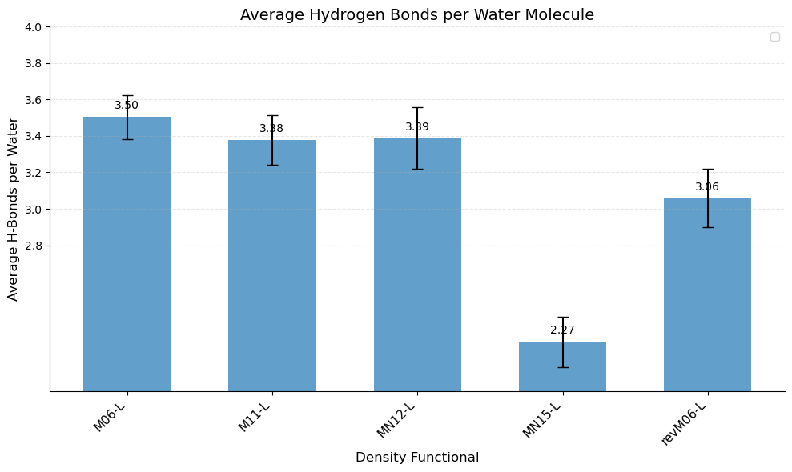

H-Bond Analysis and Visualization#
We examine the hydrogen-bonding network, a critical aspect of water’s structure and dynamics. We compare the average number of hydrogen bonds (H-bonds) per water molecule calculated by CRISP against values reported by Villard et al. [1], referencing the approximate experimental value for bulk water. CRISP employs a well-defined geometric criterion based on donor-hydrogen-acceptor angle and hydrogen-acceptor distance cutoffs. This direct geometric definition is commonly used in H-bond analysis and provides a clear, reproducible measure of local connectivity.
Analysis Parameters#
CRISP uses geometric criteria for hydrogen bond identification:
Angle cutoff: 120° minimum for donor-hydrogen-acceptor angle
H-bond cutoff: 2.5 Å maximum hydrogen-acceptor distance
Bond cutoff: 1.6 Å maximum covalent bond distance
Frame skip: 10 frames for trajectory analysis
Multi-Functional Analysis#
from CRISP.data_analysis.h_bond import hydrogen_bonds
# Functionals and directory mapping
functionals = ['M06-L', 'M11-L', 'MN12-L', 'MN15-L', 'revM06-L']
func_dir_map = {
'M06-L': 'M06L', 'M11-L': 'M11L', 'MN12-L': 'MN12L',
'MN15-L': 'MN15L', 'revM06-L': 'REVM06L'
}
# Analysis parameters
frame_skip = 10
angle_cutoff = 120
h_bond_cutoff = 2.5
bond_cutoff = 1.6
for func in functionals:
func_dir = func_dir_map[func]
# Define paths
traj_path = f'./supplementary_data/MetaGGA/{func_dir}/TRAJEC.traj'
output_dir = f'./Data_supplementary_analysis/MetaGGA/{func_dir}/hydrogen_bonds'
indices_path = f'{output_dir}/donor_acceptor_indices.npy'
# Run hydrogen bond analysis
h_bonds_per_frame = hydrogen_bonds(
traj_path=traj_path,
frame_skip=frame_skip,
acceptor_atoms=["O"],
angle_cutoff=angle_cutoff,
h_bond_cutoff=h_bond_cutoff,
bond_cutoff=bond_cutoff,
mic=True,
single_h_bond=False,
output_dir=output_dir,
plot_count=True,
plot_heatmap=True,
plot_graph_frame=True,
plot_graph_average=True,
indices_path=indices_path,
graph_frame_index=0
)
Results and Comparison#
The analysis reveals functional-dependent hydrogen bonding patterns consistent with the structural differences observed in the RDF analysis. CRISP’s results align well with the trends reported by Villard et al. [1], showing that meta-GGA functionals produce varying degrees of water structure.
Visualization:
{kind=link}
Summary#
CRISP’s geometric approach provides direct and physically meaningful assessment of hydrogen bonding networks, enabling detailed analysis of local connectivity patterns. The method offers comprehensive visualization options and statistical analysis across trajectory frames with reproducible, well-defined parameters.